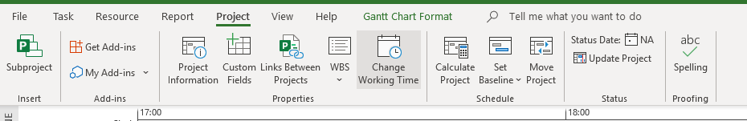
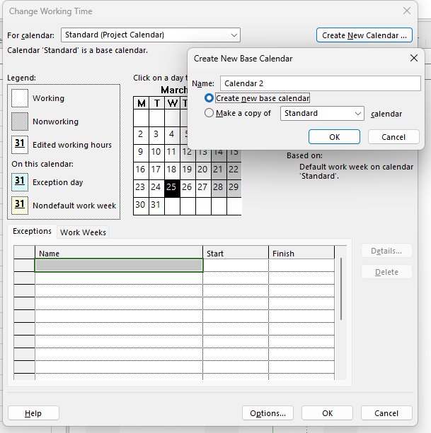
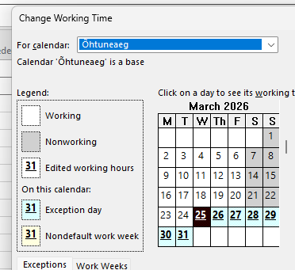
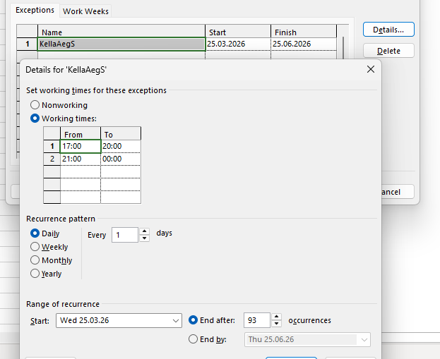
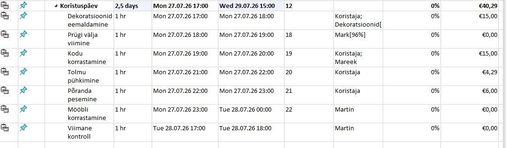

🎯 Eesmärk: Selles juhendis näidatakse, kuidas luua uus kalender, muuta tööaega ja kasutada seda projektis.
Kalendri seadete avamine
Minge vahekaardile Project, seejärel leidke nupp Change Working Time.

Uue kalendri loomine
Pärast klõpsamist avaneb aken. Vajutage Create New Calendar..., sisestage kalendri nimi ja valige Create new base calendar.

Kalendri valimine
Valige loodud kalender loendist For calendar: (Teie kalender).

Aja seadistamine
Määrake töö algus- ja lõppkuupäevad. Täpsemate seadete jaoks vajutage Details ja määrake tööajad.

Kalendri kasutamine projektis
Pärast seadistamist saab kalendrit kasutada projekti ülesannetes. See mõjutab ajakava, ülesannete kestust ja tööpäevi.
